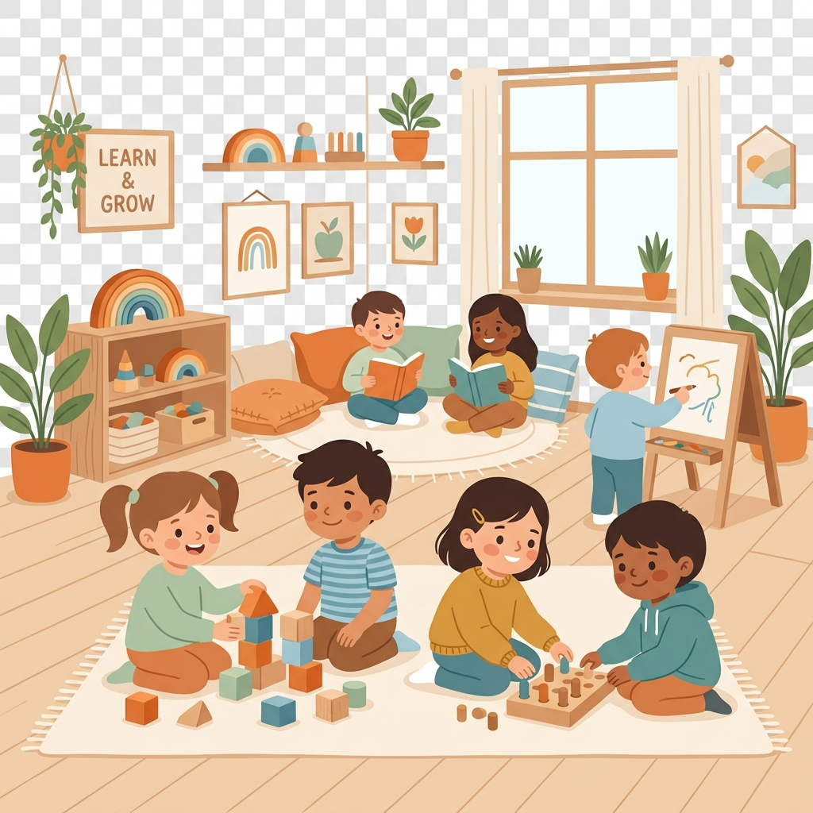

Usia 1–2 Tahun
Nursery
Pengasuhan lembut dan penuh kasih bagi pembelajar termuda kita. Fokus pada eksplorasi sensorik, pengenalan bahasa, dan rasa percaya diri awal.
Pelajari Lebih LanjutLingkungan belajar terinspirasi Montessori tempat anak usia 1–6 tahun menjelajahi dunia melalui rasa ingin tahu, kreativitas, dan bermain. Dipercaya oleh 500+ keluarga.

Pendaftaran Dibuka!
Tahun Ajaran 2025–2026
500+
Siswa Bahagia
25+
Guru Berpengalaman
12
Tahun Keunggulan
98%
Kepuasan Orang Tua
Kami memadukan filosofi Montessori terbaik, pedagogi modern, dan lingkungan hangat yang penuh kasih sayang untuk membantu setiap anak berkembang.
Eksplorasi mandiri dengan pencapaian belajar terstruktur. Setiap kegiatan dirancang untuk mendukung perkembangan kognitif, emosional, dan sosial.
Maksimal 12 anak per kelas. Rasio guru dan siswa yang sangat rendah (1:6) memastikan setiap anak mendapatkan perhatian personal yang tulus.
CCTV 24/7, akses biometrik, petugas keamanan terlatih, serta lingkungan ramah anak. Keselamatan buah hati Anda adalah prioritas utama kami.
Bahasa Inggris dan Bahasa Indonesia sejak hari pertama. Pendidikan bilingual terbukti memberi keunggulan kognitif jangka panjang bagi anak.
Seni, musik, gerak tubuh, alam, dan STEM diintegrasikan setiap minggu. Kami membimbing anak secara utuh — intelektual, emosional, dan fisik.
Laporan harian digital, pembaruan aplikasi orang tua, dan rapat kemajuan bulanan. Anda selalu terhubung dengan perkembangan buah hati Anda.
Dari langkah pertama hingga persiapan masuk SD — kami menyediakan program terbaik untuk setiap tumbuh kembang anak.
Pengasuhan lembut dan penuh kasih bagi pembelajar termuda kita. Fokus pada eksplorasi sensorik, pengenalan bahasa, dan rasa percaya diri awal.
Pelajari Lebih LanjutSosialisasi awal, ekspresi kreatif, dan kemampuan bahasa lewat aktivitas berbasis bermain yang terarah serta sesi diskusi lingkaran cerita.
Pelajari Lebih LanjutPengenalan membaca & berhitung awal, serta berpikir kritis melalui proyek langsung yang interaktif, bercerita, dan kerja kelompok.
Pelajari Lebih LanjutProgram kesiapan sekolah dasar dengan persiapan akademis matang: membaca, menulis, berhitung, sains dasar, dan pembentukan karakter sosial mandiri.
Pelajari Lebih LanjutKami percaya setiap anak terlahir dengan rasa ingin tahu alami yang luar biasa. Tugas kami bukanlah menjejali mereka dengan pengetahuan hafalan, melainkan memicu rasa cinta mereka untuk terus belajar.
Pendekatan kami memadukan metode Montessori yang mandiri dengan kreativitas Reggio Emilia serta penemuan berbasis bermain — menciptakan lingkungan ramah yang berpusat sepenuhnya pada anak.
Eksplorasi mandiri didampingi oleh pendidik profesional
Kurikulum terintegrasi STEAM + Seni Kreatif
Fokus pada kecerdasan emosional dan ketahanan diri
Pembelajaran luar ruangan berbasis alam setiap hari
12+
Tahun mengasuh
generasi hebat
Ruang belajar indah yang aman, terencana, dan dirancang khusus untuk memenuhi kenyamanan eksplorasi anak-anak.
Ruang berlimpah cahaya alami, dilengkapi alat peraga Montessori, sudut baca nyaman, serta area kreasi anak.
Area terbuka luas 1.200 m² dengan struktur panjat kayu, bak pasir besar, kebun edukatif, dan area eksplorasi alam.
Lebih dari 2.000 koleksi buku cerita dwibahasa di ruang karpet lembut yang merangsang kecintaan membaca anak.
Studio kreatif khusus lengkap dengan instrumen alat musik ramah anak, cat, dan sarana seni visual ekspresif.
Katering makanan sehat harian bersertifikat ahli gizi, disiapkan segar di sekolah dengan jaminan bebas alergi.
Perawat sekolah yang siaga, guru bersertifikasi P3K medis anak, ruang filter udara HEPA, serta sistem pengamanan ketat.
Tersertifikasi resmi, berpengalaman luas, dan memiliki kepedulian tulus yang besar pada tumbuh kembang buah hati Anda.
Kepala Sekolah TK
M.Ed. Anak Usia Dini • 10 Tahun Pengalaman • Sertifikasi Resmi Montessori
Guru Utama Prasekolah
S.Pd. PAUD • 8 Tahun Pengalaman • Spesialisasi Pedagogi Reggio Emilia
Guru Nursery & Playgroup
B.Ed. Psikologi Perkembangan • 6 Tahun Pengalaman • Lisensi Infant Care
Guru Musik & Seni
B.Mus. Seni Musik • 7 Tahun Pengalaman • Bersertifikat Orff Schulwerk
Ungkapan tulus dan pengalaman berharga dari keluarga yang memercayakan buah hati mereka kepada kami.
"Brightlings mengubah putri kami sepenuhnya. Pada usia 3 tahun, dia adalah anak yang sangat pemalu — sekarang dia selalu berlari masuk sekolah dengan riang setiap pagi. Para guru tulus menyayangi anak-anak."
Anisa & Rama Hakim
Orang Tua Zahra, Kelas Playgroup
"Sebagai orang tua yang sibuk bekerja, kami butuh sekolah yang dapat dipercaya penuh. Laporan harian digital Brightlings, komunikasi terbuka, dan dedikasi hangat staf memberi kami kedamaian hati yang total."
Bintang & Citra Nugraha
Orang Tua Arjun, Kelas Preschool
"Putra kami masuk Brightlings dengan kemampuan bicara dwibahasa yang minim. Di akhir tahun pertamanya di TK, dia sudah bisa membaca lancar dalam bahasa Inggris & Indonesia. Program bilingualnya luar biasa!"
David & Melisa Tan
Orang Tua Evan, Kelas Kindergarten
Lebih dari 300 keluarga bergabung merayakan hari penuh permainan, pertunjukan bakat, dan kenangan indah. Intip kemeriahan acara terbesar tahun ini.
Kurikulum berbasis alam baru kami mengajak anak mengelola kebun sayur sekolah untuk belajar tentang ekosistem, rasa tanggung jawab, dan gizi makanan.
Kami sangat bangga menerima kembali Penghargaan Keunggulan Pendidikan Anak Usia Dini tingkat nasional selama 3 tahun berturut-turut.
Segala informasi penting yang wajib Anda ketahui sebelum mendaftarkan anak.
Kuota Kursi Terbatas
Bergabunglah bersama 500+ keluarga yang memercayakan masa depan emas anak mereka di Brightlings Academy. Pendaftaran 2025–2026 dibuka sekarang.
Bebas ikatan komitmen • Sesi tur kunjungan sekolah gratis • Respons dalam 24 jam